Research
MPHF Generation Time (server system, NGram-Dataset-Small key set)
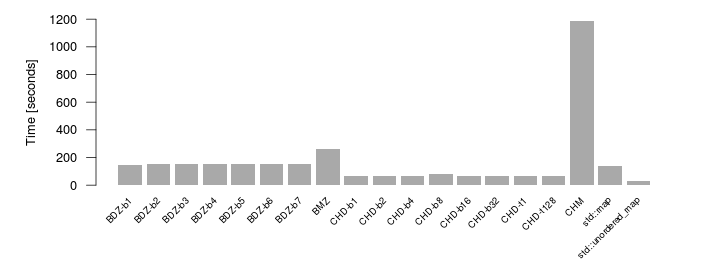
The C++ standard containers std::map and std::unordered_map are used to map the key set to the range [0, n) in order to simulate a minimum perfect hash function.
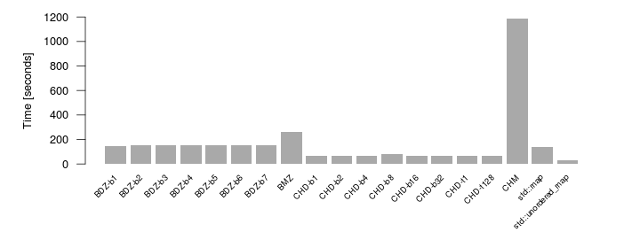
The C++ standard containers std::map and std::unordered_map are used to map the key set to the range [0, n) in order to simulate a minimum perfect hash function.
MPHF Serialized Size (server system, NGram-Dataset-Small key set)
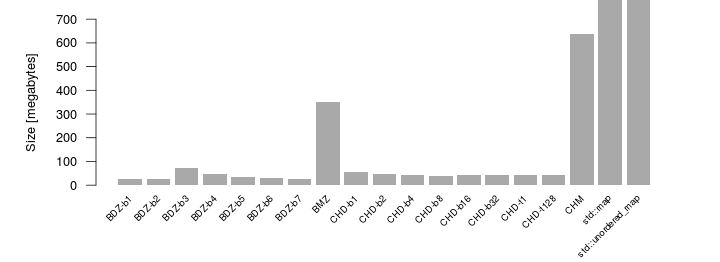
The C++ standard containers consume a lot more memory since they need to store the entire key set. The actual values are about 10 GB for std::map and 8 GB for std::unordered_map.
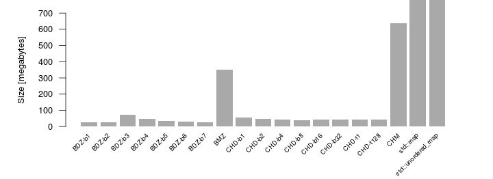
The C++ standard containers consume a lot more memory since they need to store the entire key set. The actual values are about 10 GB for std::map and 8 GB for std::unordered_map.
MPHF Computation Time (server system, NGram-Dataset-Small key set)
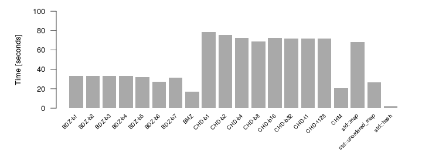
The C++ standard hash function object std::hash for std::string is not a minimal perfect hash function, but listed here for comparison reasons.
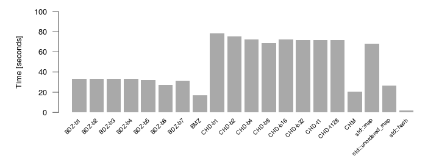
The C++ standard hash function object std::hash for std::string is not a minimal perfect hash function, but listed here for comparison reasons.
MPHF Generation Time (server system, NGram-Dataset-Large key set)
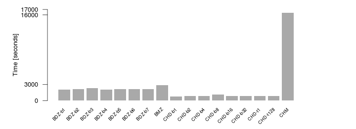
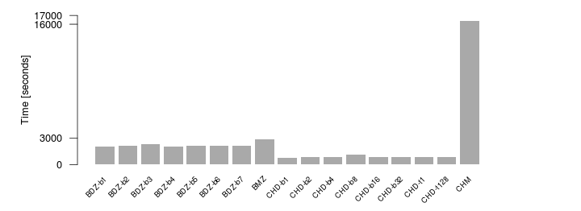
MPHF Serialized Size (server system, NGram-Dataset-Large key set)
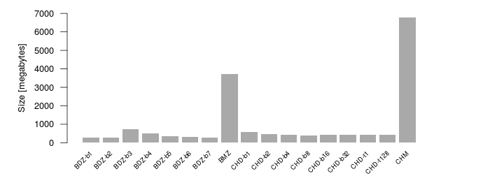
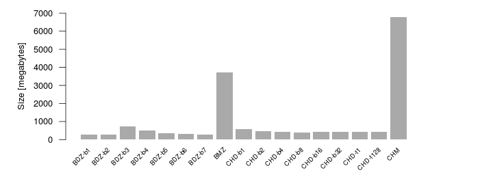
MPHF Computation Time (server system, NGram-Dataset-Large key set)
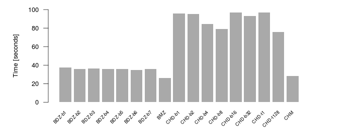
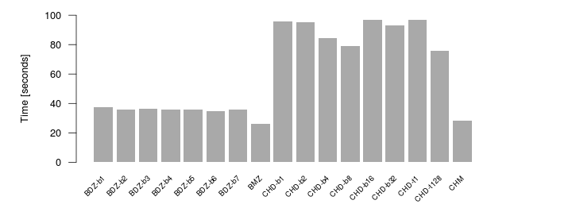
Disk-based Lookup Time without Socket Connection (server system, NGram-Dataset-Small key set)
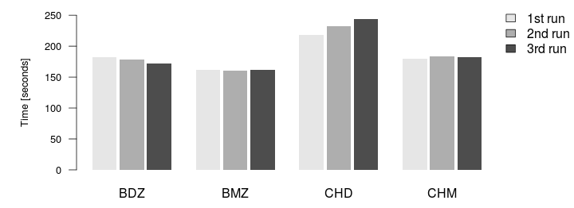
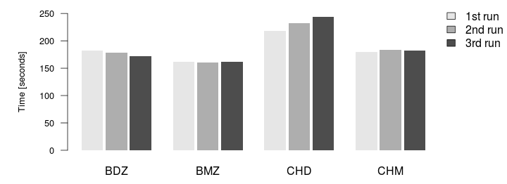
Disk-based Lookup Time over TCP Socket Connection (server system, NGram-Dataset-Small key set)
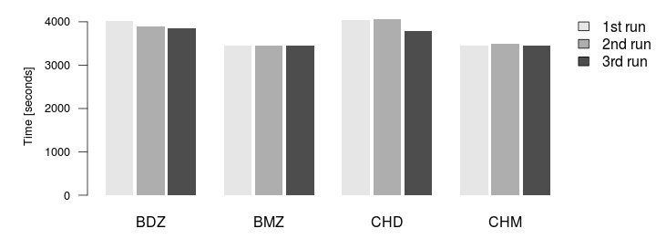
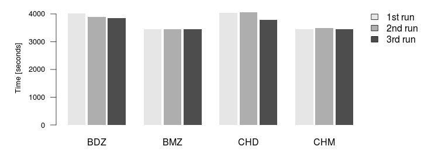
Disk-based Lookup Time over UDP Socket Connection (server system, NGram-Dataset-Small key set)
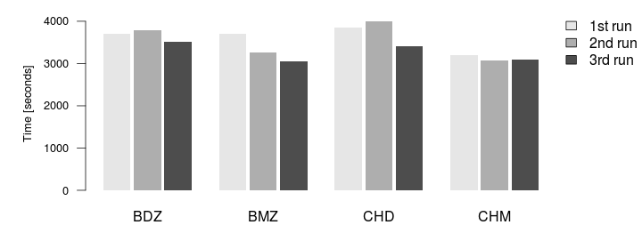
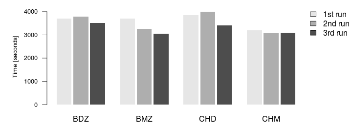
Disk Read Rates (desktop system, Disk Utility tool)
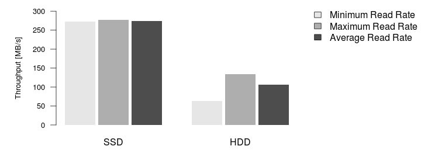
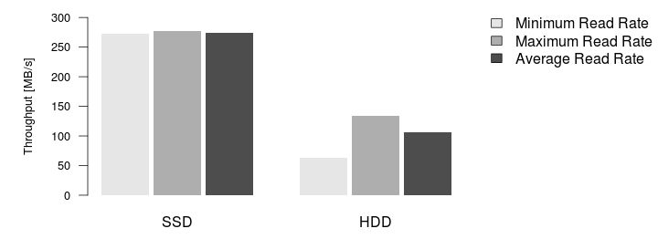
Disk Access Times (desktop system, Disk Utility tool)
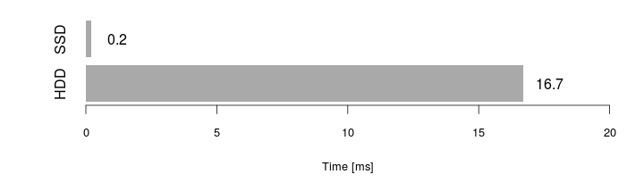
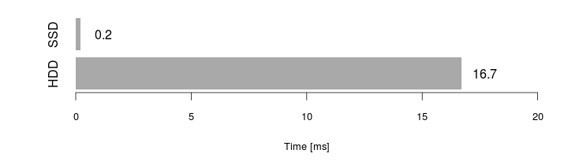
In-memory Lookup Time (desktop system)
[not provided]
[not provided]
Server System
Operating System: Ubuntu 12.04 LTS 64 Bit
Processor: 16x Intel Xeon CPU E5520 2.27 GHz
Storage (HDD): LSI MegaRAID SAS RMB, 3.5 + 2x 9 TB
Memory: 70 GB
Operating System: Ubuntu 12.04 LTS 64 Bit
Processor: 16x Intel Xeon CPU E5520 2.27 GHz
Storage (HDD): LSI MegaRAID SAS RMB, 3.5 + 2x 9 TB
Memory: 70 GB
Desktop System
Operating System: Ubuntu 12.04 LTS 64 Bit
Processor: 4x Intel Core2 Quad CPU Q6600 2.40 GHz
Storage (SSD): ATA Samsung SSD 830 Series, 256 GB
Storage (HDD): ATA Seagate ST31000528AS, 7200 RPM, 1 TB
Memory: 7.7 GB
Operating System: Ubuntu 12.04 LTS 64 Bit
Processor: 4x Intel Core2 Quad CPU Q6600 2.40 GHz
Storage (SSD): ATA Samsung SSD 830 Series, 256 GB
Storage (HDD): ATA Seagate ST31000528AS, 7200 RPM, 1 TB
Memory: 7.7 GB
Datasets
NGram-Dataset-Small: 1.9 GB, 8 text files, 80 000 000 records
NGram-Dataset-Large: 20.5 GB, 85 text files, 850 000 000 records
File Format
NGram-Dataset-Small: 1.9 GB, 8 text files, 80 000 000 records
NGram-Dataset-Large: 20.5 GB, 85 text files, 850 000 000 records
File Format
From southern British 63 From southern California 260 From southern Canada 72 From southern Europe 43 From southern Florida 483 From southern France 78 From southern Germany 59 From southern Indiana 109